Summary of 6_Default_RandomForest
<< Go back
Random Forest
- criterion: gini
- max_features: 0.9
- min_samples_split: 30
- max_depth: 4
- num_class: 5
- explain_level: 2
Validation
- validation_type: split
- train_ratio: 0.75
- shuffle: True
- stratify: True
Optimized metric
logloss
Training time
9.9 seconds
Metric details
|
0 |
1 |
2 |
3 |
4 |
accuracy |
macro avg |
weighted avg |
logloss |
| precision |
0.878049 |
0.3875 |
0.9375 |
0.392857 |
0.5 |
0.56 |
0.619181 |
0.621074 |
0.860851 |
| recall |
0.765957 |
0.62 |
0.517241 |
0.323529 |
0.333333 |
0.56 |
0.512012 |
0.56 |
0.860851 |
| f1-score |
0.818182 |
0.476923 |
0.666667 |
0.354839 |
0.4 |
0.56 |
0.543322 |
0.569706 |
0.860851 |
| support |
47 |
50 |
29 |
34 |
15 |
0.56 |
175 |
175 |
0.860851 |
Confusion matrix
|
Predicted as 0 |
Predicted as 1 |
Predicted as 2 |
Predicted as 3 |
Predicted as 4 |
| Labeled as 0 |
36 |
5 |
0 |
6 |
0 |
| Labeled as 1 |
2 |
31 |
1 |
11 |
5 |
| Labeled as 2 |
1 |
13 |
15 |
0 |
0 |
| Labeled as 3 |
1 |
22 |
0 |
11 |
0 |
| Labeled as 4 |
1 |
9 |
0 |
0 |
5 |
Learning curves
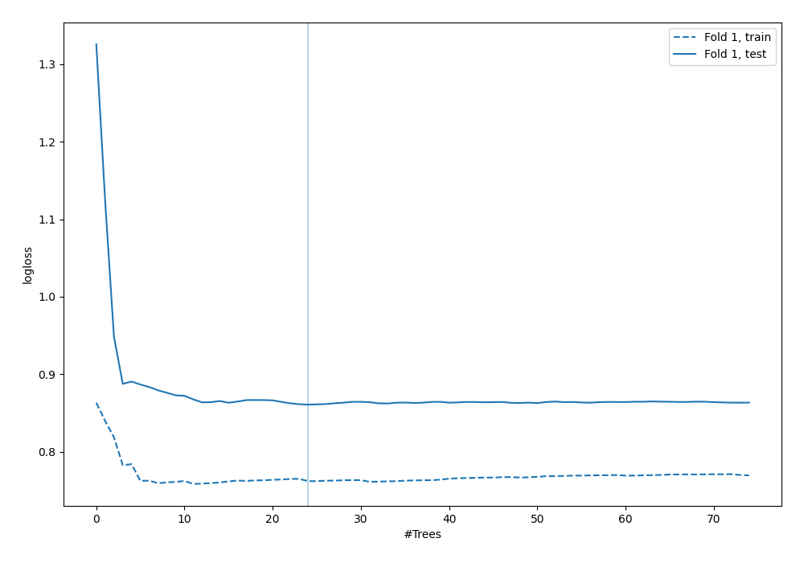
Permutation-based Importance
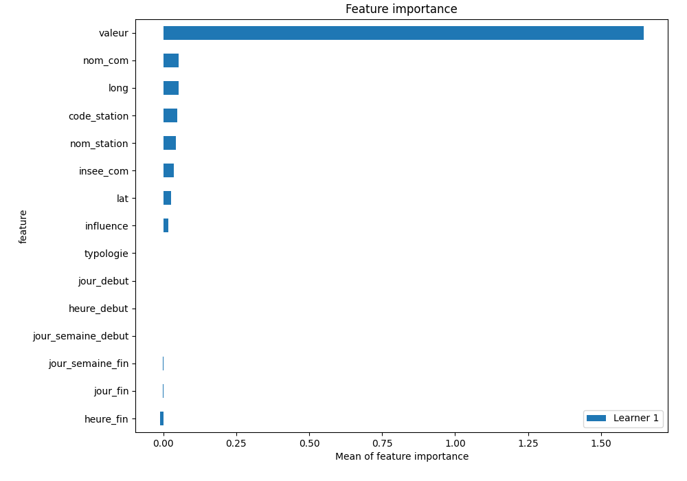
SHAP Importance
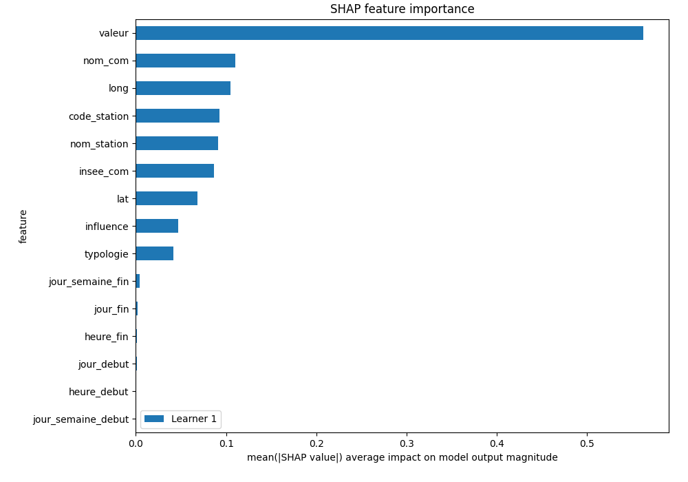
SHAP Dependence plots
Dependence 0 (Fold 1)
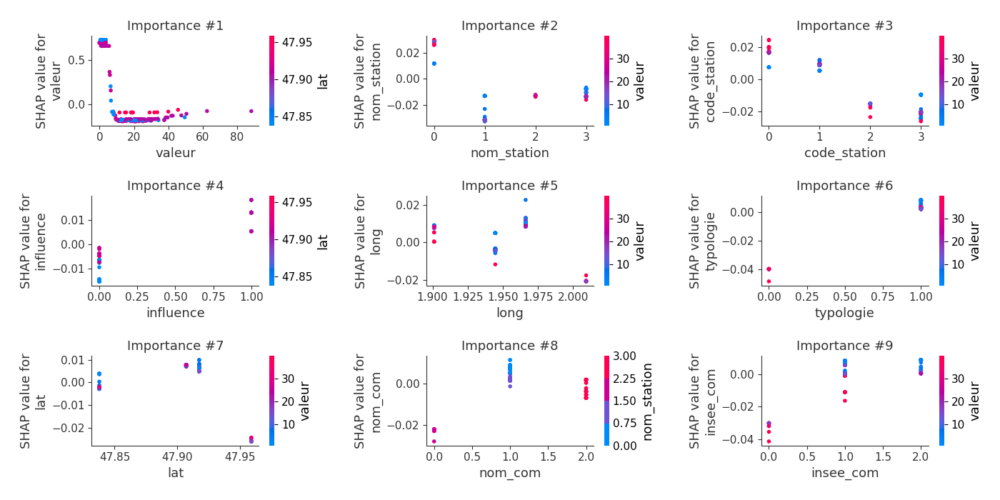
Dependence 1 (Fold 1)
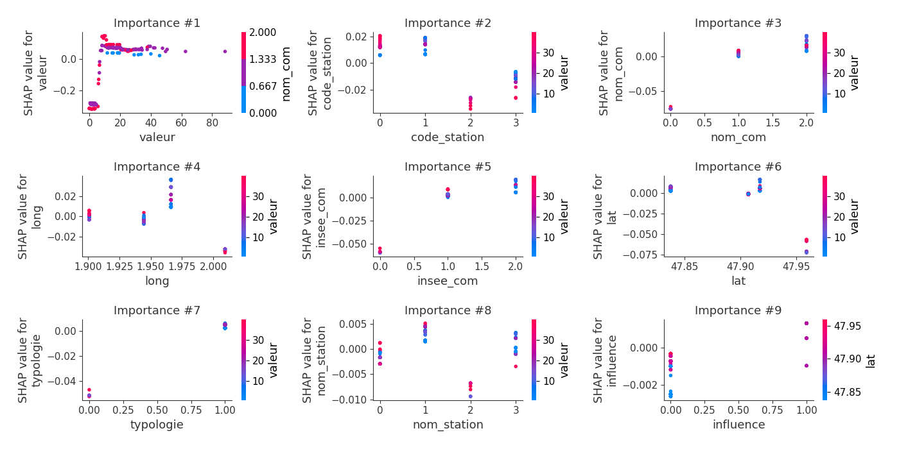
Dependence 2 (Fold 1)
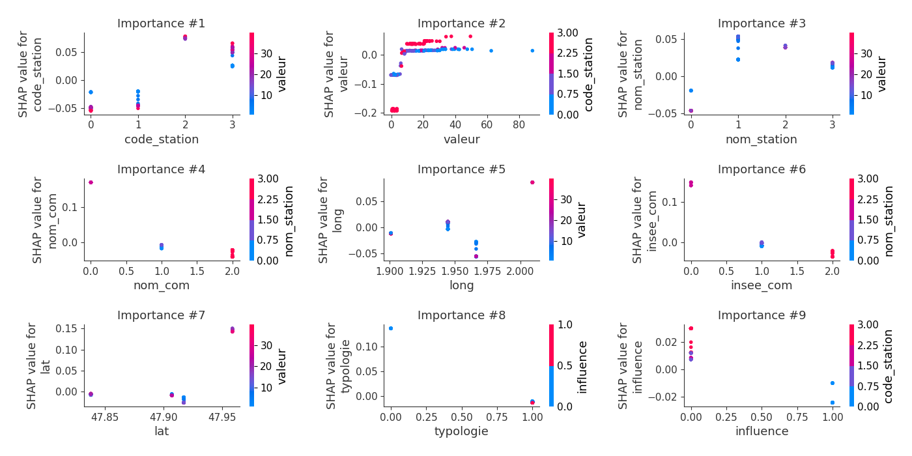
Dependence 3 (Fold 1)
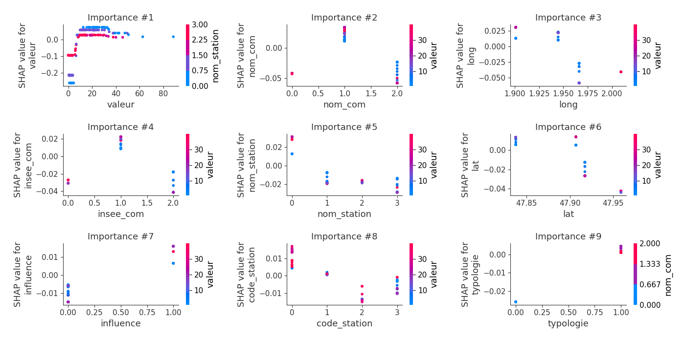
Dependence 4 (Fold 1)
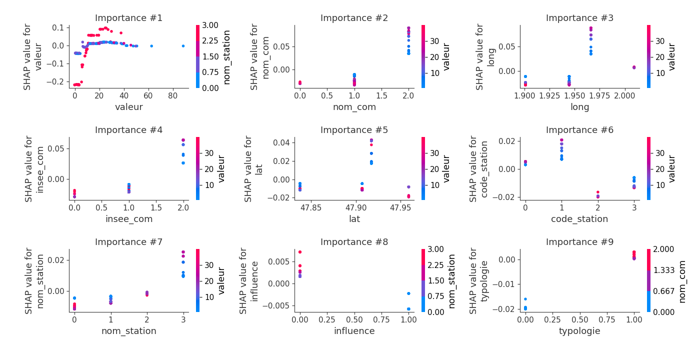
SHAP Decision plots
Worst decisions for selected sample 1 (Fold 1)
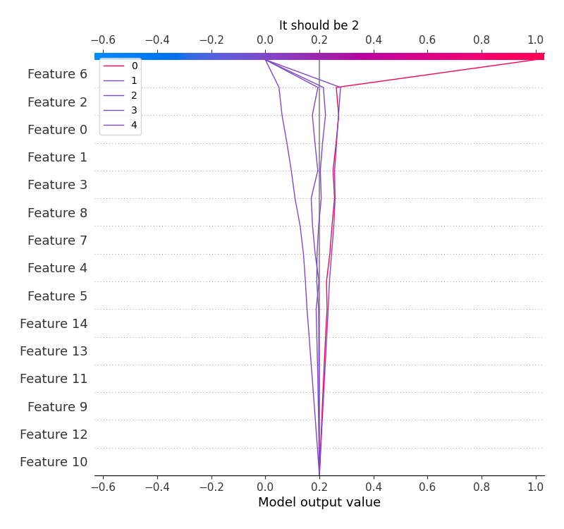
Worst decisions for selected sample 2 (Fold 1)
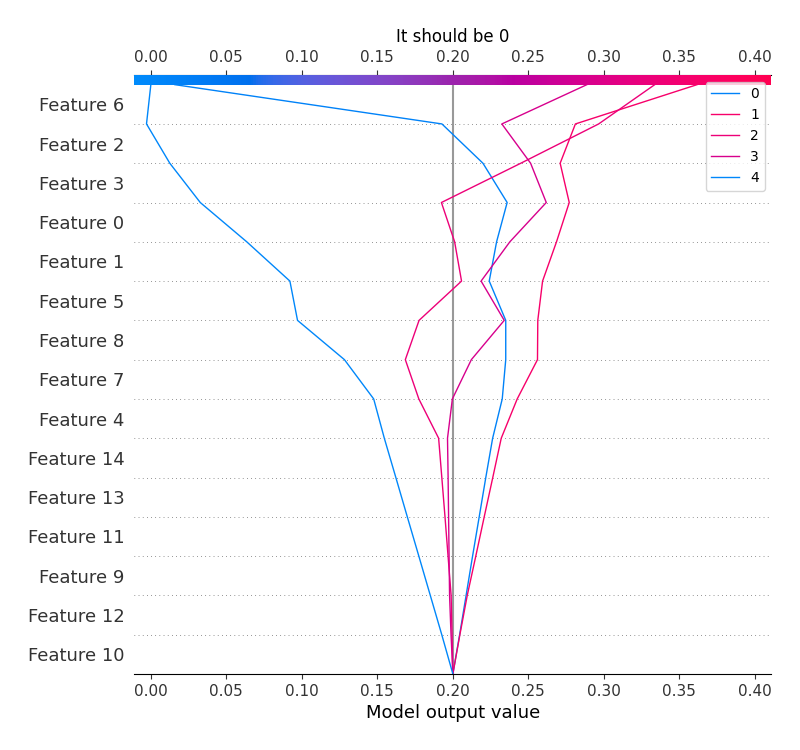
Worst decisions for selected sample 3 (Fold 1)
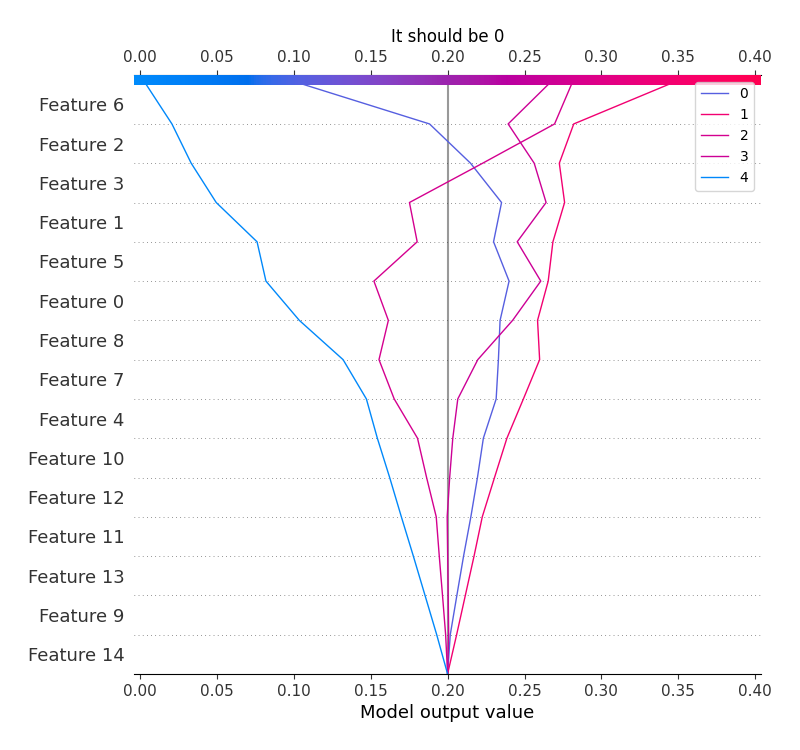
Worst decisions for selected sample 4 (Fold 1)
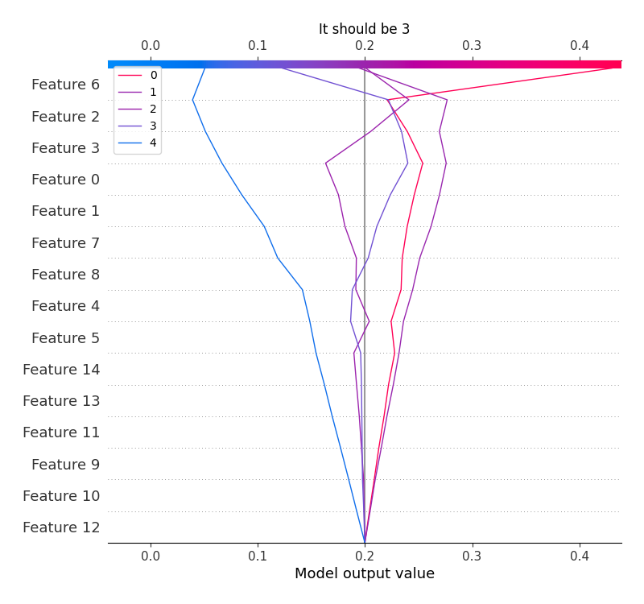
Best decisions for selected sample 1 (Fold 1)

Best decisions for selected sample 2 (Fold 1)
Best decisions for selected sample 3 (Fold 1)
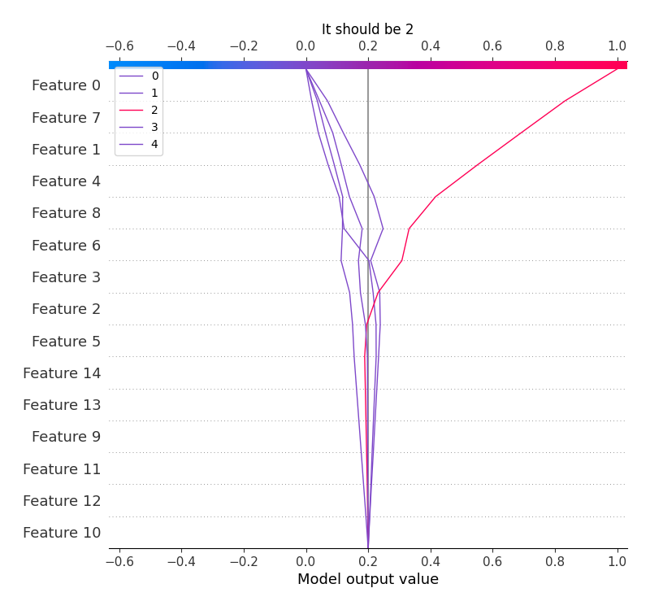
Best decisions for selected sample 4 (Fold 1)
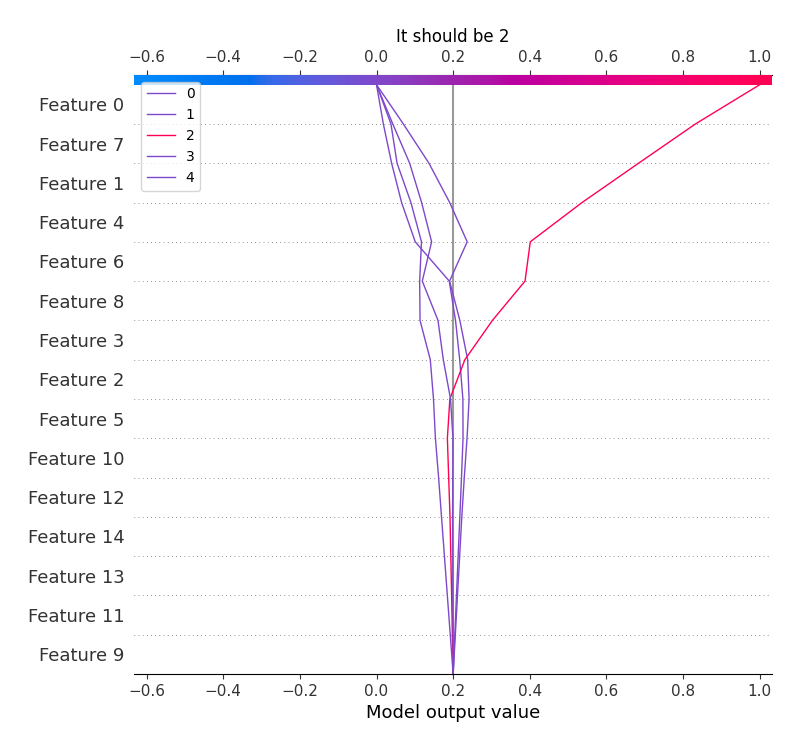
<< Go back